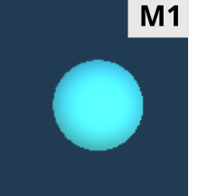
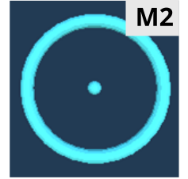
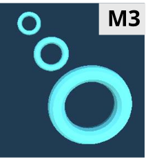
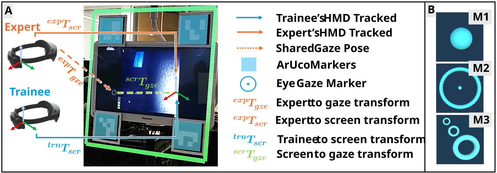
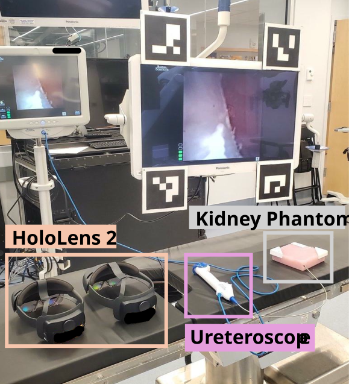
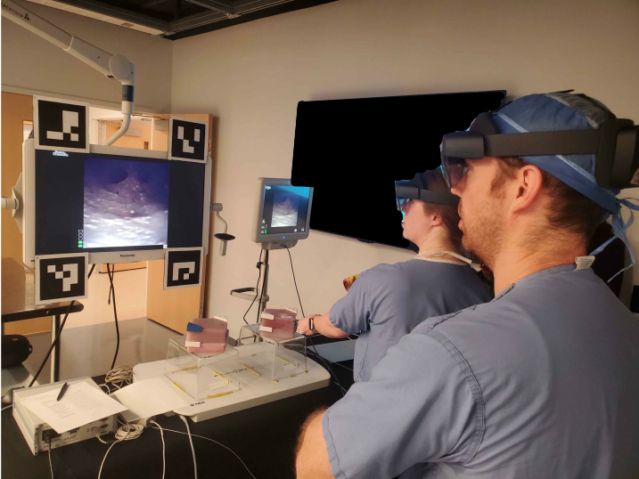

The number of kidney stone cases in the U.S. has tripled since 1980. Unfortunately, 23% of kidney stone removal surgeries require repeat procedures within 20 months. The high repeat surgery rate is often due to surgeons missing stones in the initial treatment. Effective training can reduce the need for re-operation, yet learning opportunities in the operating room (OR) are limited, as patient care must take priority.
Augmented reality (AR) can improve the effectiveness of training in the OR by providing real-time visual feedback, but the interface must be carefully designed not to interfere with clinical workflow. Building on prior design guidelines and AR training tools, we design and evaluate the effectiveness of enhancing training through three AR gaze markers.
Our AR training system tracks the expert's eye gaze and projects the marker onto the trainee’s head-mounted display to provide visual guidance. Eight trainees performed a simulated ureteroscopy task of identifying kidney stones in high-fidelity kidney phantoms while guided by an expert. We record the number of stones they found, time, and eye-gaze metrics. At the end of each trial, trainees provide subjective feedback on task load and performance through the NASA-TLX questionnaire.
Results show that while some gaze markers increased perceived mental demand, they enhanced engagement and performance. Gaze metrics revealed that marker shape affects cognitive load, as measured by the fixation-to-saccades ratio. By translating prior design principles into an AR-based guidance system, this work supports intraoperative training and highlights AR’s potential in surgical education.






This work evaluated the impact of three gaze markers in an AR gaze-based training application. Each trainee performed ureteroscopy on four phantoms, using each of the gaze markers with verbal feedback or verbal feedback alone. We report trainees' task performance, gaze metrics, and self-reported task load (NASA-TLX).
Our results show that well-designed markers reduce cognitive load and enhance task engagement. By emphasizing surgeon-centered AR design, our work establishes a foundation for AR-assisted surgical training and medical education.
Check out the project on GitHub.